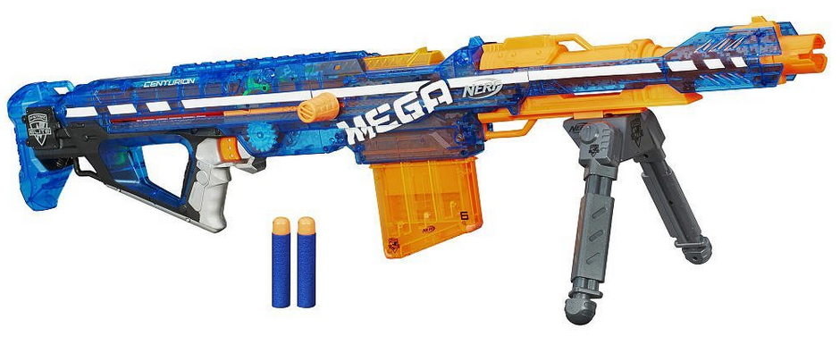
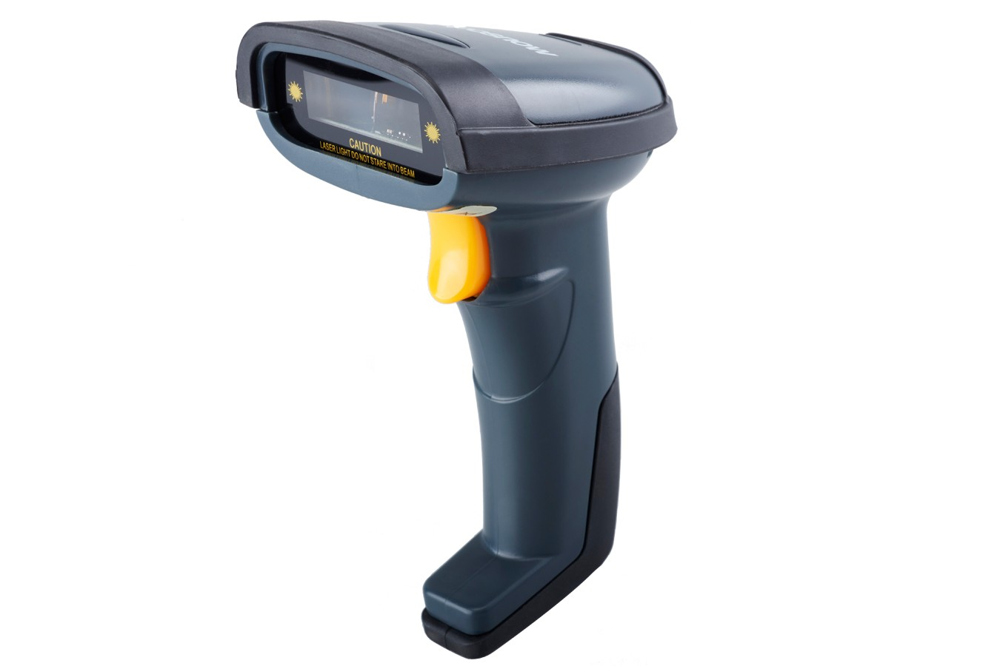
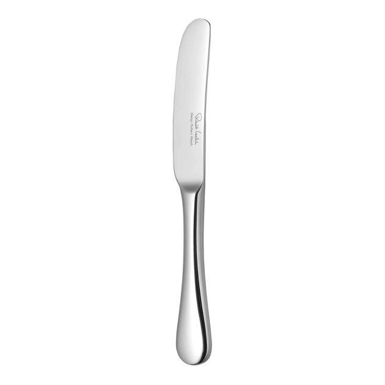
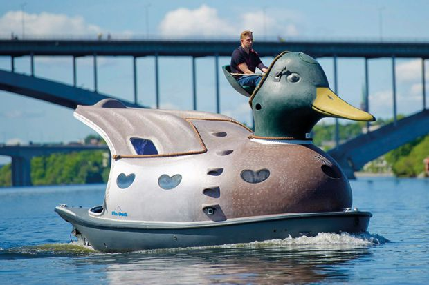
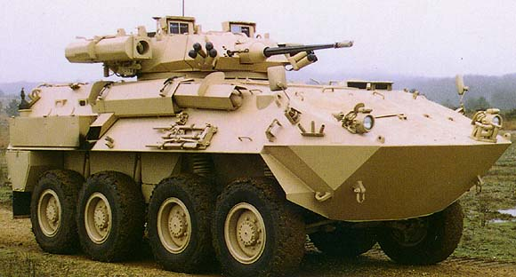

The Duck Hunters use this array of fearsome, custom-made, elite weapons, vehicles and gadgets to bring us back the finest ducks.

This is the standard issue primary weapons given to all our Hunters.

The team is given high-caliber pistols as defense weapons.

The tactical combat knife, used for melee fighting.This is the high-powered taser, used for capturing extra rare targets with minimal damage.

This stealth attack boat allows the Duck Hunter team to sneak up on potential targets.

This vehicle is used for land travel, as well as amphibious attack.